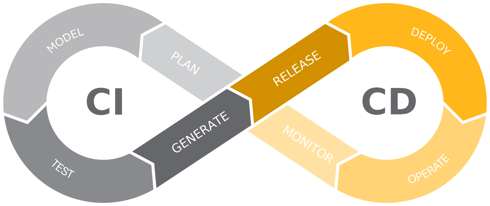
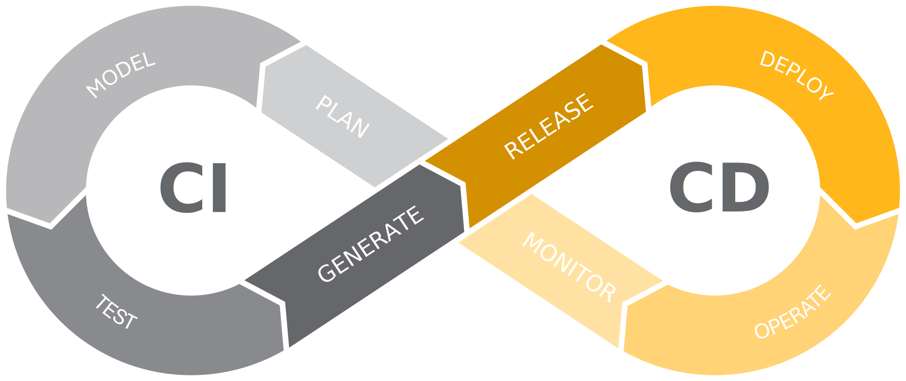
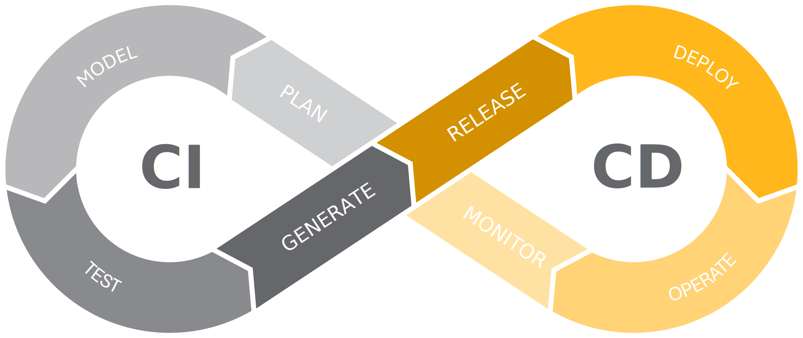

Hi, I'm Rufai Kabiru Adeniyi
DevOps Engineer & IT Support Specialist
Specializing in automation, cloud infrastructure, CI/CD pipelines, and technical support.

Specializing in automation, cloud infrastructure, CI/CD pipelines, and technical support.
I’m a versatile IT professional with over 6 years of experience in system administration, networking, and technical support, now expanding into DevOps. I hold a Diploma in Cloud Engineering from AltSchool Africa and completed Stage 7 of the HNG Internship 11 in the DevOps Engineering track, earning a Certificate of Proficiency. My expertise spans automation, infrastructure as code (Terraform), containerization (Docker, Kubernetes), and providing robust IT support solutions. I’ve successfully managed network infrastructure, resolved technical issues for diverse teams, and optimized system reliability across various industries. I’m passionate about leveraging technology to streamline processes and deliver seamless user experiences. I’m also exploring advanced CI/CD workflows to enhance deployment efficiency.
Developed a CI/CD pipeline to automate the build, test, and deployment of a Python Flask app using Jenkins and Docker, with email alerts for monitoring.
View on GitHubDeployed a web app on AWS using Terraform, configuring autoscaling, load balancers, and HTTPS security with Cloudflare and AWS Certificate Manager.
View on GitHubCreated Bash scripts to automate MySQL database backups, uploading them to AWS S3 with email notifications for enhanced data security.
View on GitHubThis project automates the setup of a web server and user management using Ansible, a powerful automation tool. The project is designed with modularity in mind, making it easy to update, maintain and extend.
View on GitHubAutomating log rotation helps to archive and delete old logs, ensuring system stability.
View on GitHubprovisioned two-tier architecture (web & database tier) on Amazon Web Services (AWS) using Terraform for Infrastructure as Code (IaC) to provision and manage AWS resources efficiently.
View on GitHub
01/2025 – Present | Lagos, Nigeria
04/2019 – 12/2024 | Lagos, Nigeria
12/2018 – 03/2019 | Lagos, Nigeria
04/2017 – 11/2018 | Lagos, Nigeria
AltSchool Africa | 03/2022 – 02/2024
Specialized in automation, infrastructure as code, and cloud infrastructure management.
Lagos State Polytechnic | 07/2013 – 09/2016
Lagos State Polytechnic | 10/2018 – 09/2021
HNG Internship 11 | 08/2024
National Institute of Information Technology (NIIT) | 10/2009 – 04/2010
Email:
Phone: +2348028082472, +2348064458818
LinkedIn: linkedin.com/in/rufai-adeniyi
GitHub: github.com/neyo55